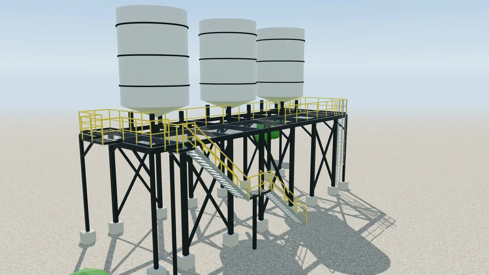
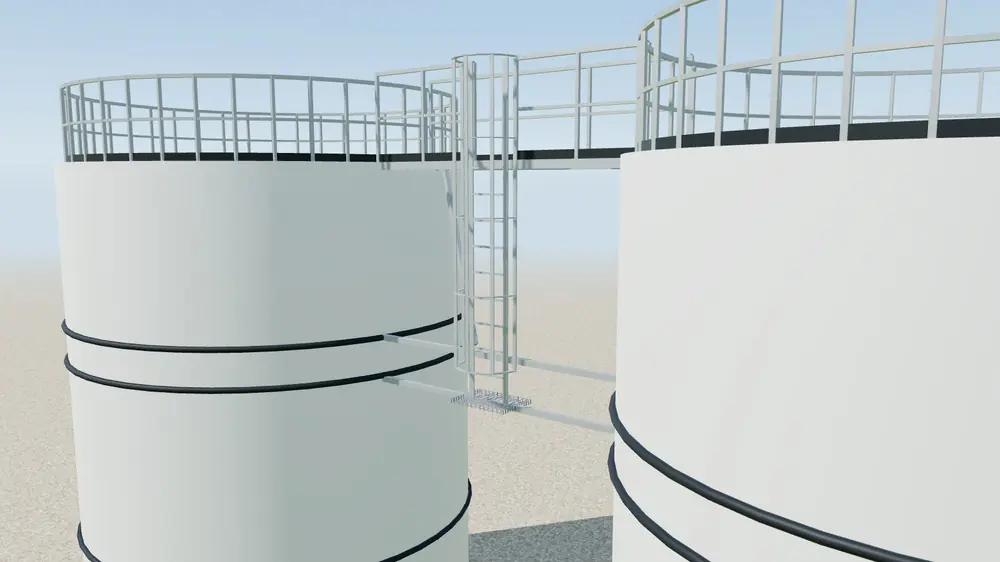
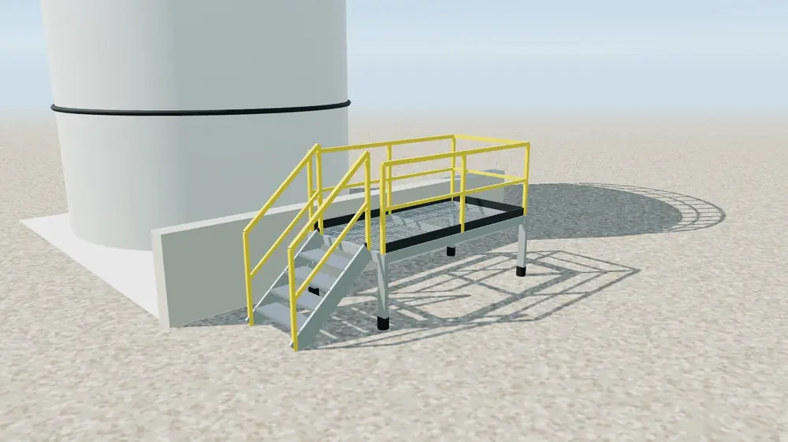
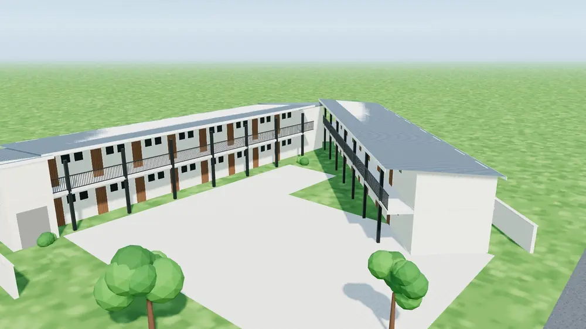
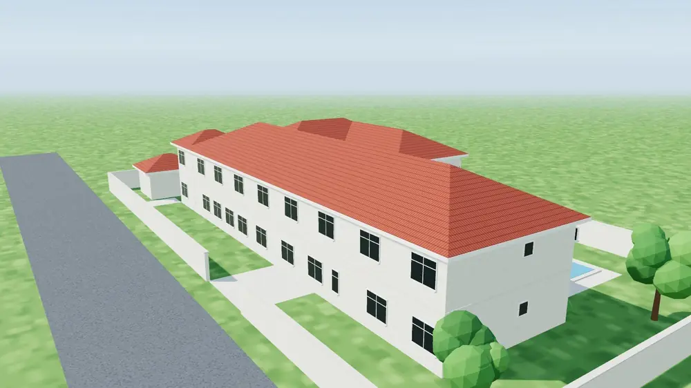
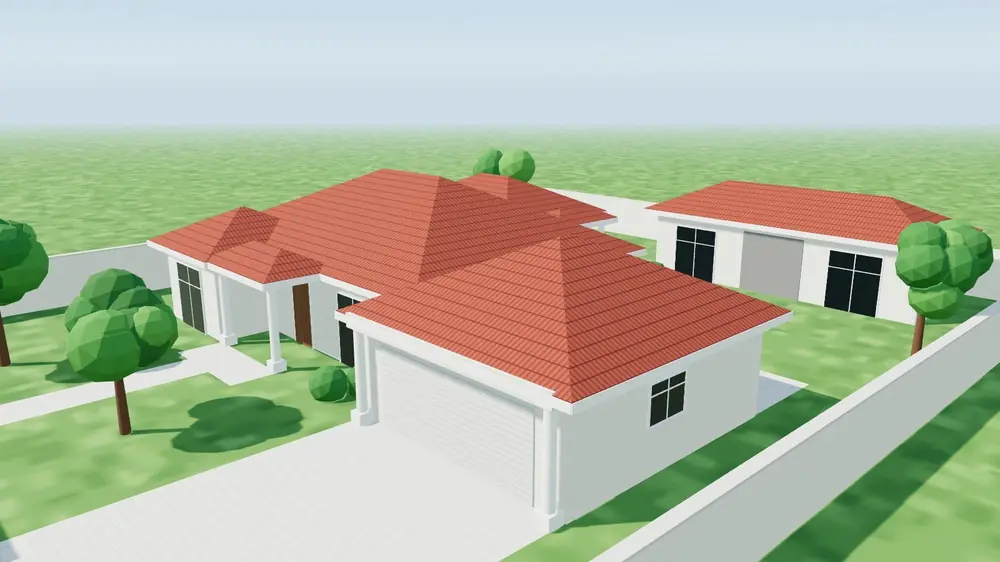
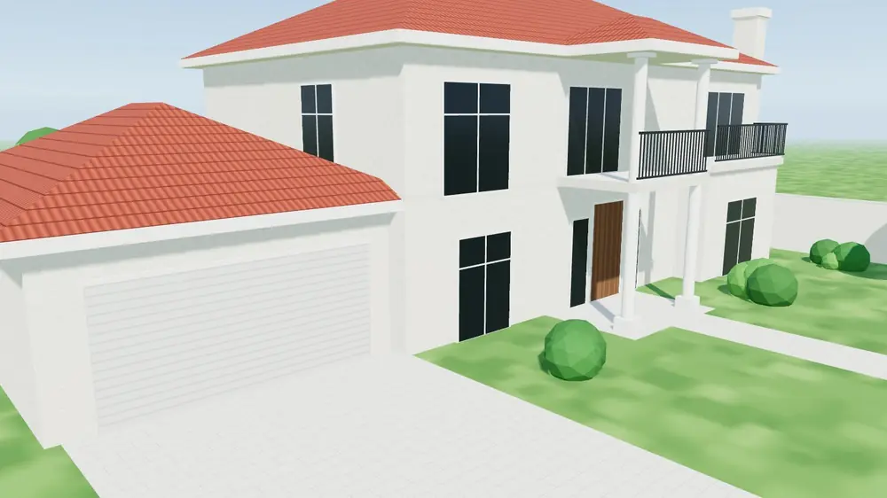

Structural design & drafting for industry and homes.
Steel and concrete structures, foundations, industrial buildings and residential buildings.

Work
 01→
01→ANS Offloading Platform
Steel access platform for chemical tanker offloading

02→20D Tank Cat Ladder
Caged access ladder between two existing tanks
 03→
03→300D Silo Tanks Support & Platform
Staircase redesign and as-built steel support structure
 04→
04→300D Boiler Building
As-built boiler house with a new 2-ton crawl beam

05→AN Bund Wall Walkway
Temporary mobile access platform with stair

06→ERF 2433 — Student Boarding House
32-unit, two-storey H2 boarding house

07→ERF 1496 Capital Park, Pretoria
Two-storey H2 boarding house

08→ERF 1482 Chantelle X14
Single-storey dwelling and outbuilding

09→ERF 1/887 Doornpoort, Pretoria
Double-storey house with double garage
 10→
10→Stand 3812, Secunda
Double-storey outbuilding with garage
 11→
11→Embalenhle Family Home
Four-bedroom double-storey family home
Structural steel
Platforms, stairs, caged ladders, crawl beams, bracing and bolted connections, with fabrication shop drawings and material lists.
Concrete & foundations
Plinths, footings, slabs and beams, with reinforcement detailing and bending schedules.
Council submissions
Plans, elevations, sections, site and services layouts, with SANS 10400 and Part XA energy compliance.
As-built records
Measured and as-built drawings of existing structures, and redesign where site conditions have changed.
Details I draw
Residential
- Roof truss layouts and truss construction
- Concrete and steel-and-timber staircases
- Chimney and braai corbelling
- Sewer and drainage connections, gulleys and inspection eyes
- Internal and boundary wall strip foundations
- Suspended slab and beam layouts
- Solar hot-water installations
Structural steel
- Base plates and holding-down bolts
- Bolted beam-to-column connections
- X-bracing and knee braces
- Handrail and stanchion details
- Stair stringers with treads
- Caged ladders — hoops, straps and stringers
- Grating layouts
- Support brackets bolted to existing tank stiffeners
- Crawl beams and their connections
Concrete & civil
- Reinforced column plinths with sections and bar schedules
- Footings, slabs and beams with reinforcement detailing
- Catchment pits
- V-drains
- Site layouts
Codes I design and draw to
Loads & design basis
- SANS 10160-1Basis of structural design
- SANS 10160-2Self-weight and imposed loads
- SANS 10160-3Wind actions
- SANS 10400-BStructural design (rational design)
- SANS 10400-MStairways, ramps and landings
Concrete
- SANS 10100-1Design of concrete structures
- SANS 10100-2Materials and execution
- SANS 2001-CC1Concrete works (structural)
- SANS 10144Detailing of reinforcement
- SANS 282Bending dimensions and schedules (BS 8666 where specified)
- SANS 920Steel reinforcing bars
Structural steel
- SANS 10162-1Limit-states design of hot-rolled steelwork
- SANS 2001-CS1Fabrication and erection of structural steel
- EN 10025S355JR steel grade
- ISO 3834Welding quality
- ISO 9606-1Welder qualification
- ISO 5817Weld acceptance, quality level C
Fasteners, finishes & barriers
- ISO 898-1Class 8.8 bolts
- SANS 121 / ISO 1461Hot-dip galvanising
- SANS 1350Armco guardrail barriers
Buildings — SANS 10400
- Part AGeneral principles and requirements
- Part DPublic safety — balustrades
- Part KWalls
- Part NGlazing (with SANS 10137)
- Part PDrainage
- Part TFire protection
- Part VSpace heating — chimneys
- Part XAEnergy usage in buildings
Services
- SANS 10252-1Water supply — hot-water storage sized to Table 8
- SANS 10254Fixed electric storage water heaters
- SABS 791 / 697Drainage pipes
- SABS 1200Civil engineering construction — pipe laying
- SABS 0112Installation of drainage pipes
Engineer first, drafter by craft.
I'm a civil engineering technologist who designs and draws structures that get built — from steel access platforms on chemical plants to family homes. I work from the problem on site to the last bolt on the shop drawing, and I model every project in 3D so clients can see it before it's fabricated.
Have a structure that needs drawing?
Engineering design calculations and reports are available on request.